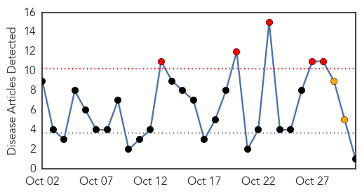
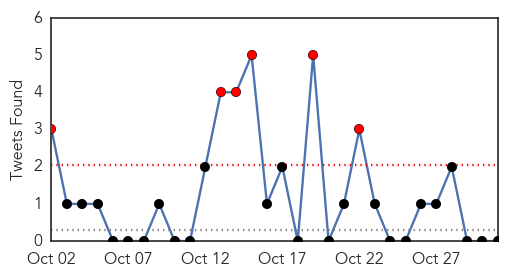
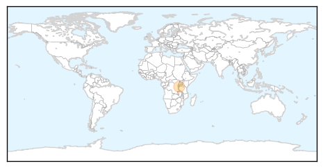
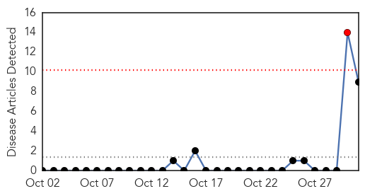
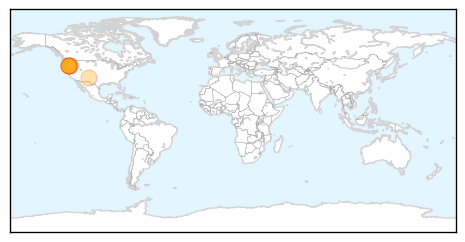
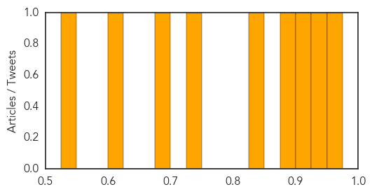

Cholera
30-Day Web Trend
5 alerts, 2 warnings

30-Day Twitter Trend
6 alerts, 0 warnings

Article Locations
Article Confidences

Top Articles:
Top Tweets:
-
No tweets found for Oct 31, 2015
Bubonic Plague
30-Day Web Trend
1 alerts, 0 warnings

30-Day Twitter Trend
0 alerts, 0 warnings

Article Locations
Article Confidences
Top Articles:
- 0.950
- Bubonic plague: Oregon teen gets ‘Black Death’ from flea bite, officials warn
- 0.933
- Teenage Girl In Oregon Contracts Bubonic Plague After Hunting Trip
- 0.908
- Oregon Teenage Girl Contracts Bubonic Plague
- 0.881
- 16-Years Oregon Girl With bubonic plague Reported
- 0.848
- Oregon Teen Diagnosed With Devastating Disease
- 0.736
- Plague update: Crook County teen out of ICU
- 0.679
- Central Oregon builds experience with plague cases; Crook County girl was diagnosed quickly
- 0.612
- Health officials say Oregon teen has bubonic plague
- 0.541
- Health officials say bubonic plague case in Oregon is not a sign of a pandemic
Top Tweets:
-
No tweets found for Oct 31, 2015